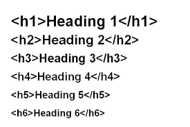
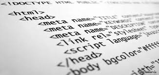
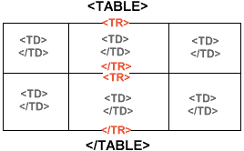
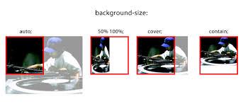
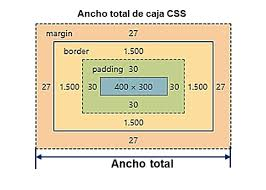

HTML (lenguaje de marcado de hipertexto) utiliza un sistema de marcado compuesto de elementos que representan
contenido. El marcado significa que con HTML declaras lo que se presenta a un espectador, no cómo se presenta. Visual
Las representaciones se definen mediante hojas de estilo en cascada (CSS) y se realizan mediante navegadores.El
lenguaje HTML basa su filosofía de desarrollo en la diferenciación. Para añadir un elemento externo a la página
(imagen, vídeo, script, entre otros.), este no se incrusta directamente en el código de la página, sino que se
hace una referencia a la ubicación de dicho elemento mediante texto.
¿Que es CSS?
Es un lenguaje de diseño gráfico para definir y crear la presentación de un documento estructurado escrito en un lenguaje
de marcado. Es muy usado para establecer el diseño visual de los documentos web, e interfaces de usuario escritas en HTML.
CSS está diseñado principalmente para marcar la separación del contenido del documento y la forma de presentación de este,
características tales como las capas o layouts, los colores y las fuentes. Esta separación busca mejorar la accesibilidad
del documento, proveer más flexibilidad y control en la especificación de características presentacionales, permitir que varios
documentos HTML compartan un mismo estilo usando una sola hoja de estilos separada en un archivo .css, y reducir la complejidad y
la repetición de código en la estructura del documento

HTML proporciona no solo etiquetas de párrafo simples, sino seis etiquetas de encabezado separadas para indicar encabezados de varios tamaños y
espesores. Enumerado como el título 1 al título 6, el título 1 tiene el texto más grande y grueso en el título
6 es el más pequeño y delgado, hasta el nivel de párrafo. Este tema detalla el uso adecuado de estas etiquetas.

Si bien la mayoría de las etiquetas HTML se utilizan para crear elementos, HTML también proporciona etiquetas de formato de texto para aplicar
estilos relacionados con el texto a porciones de texto. Este tema incluye ejemplos de formato de texto HTML, como resaltado,
texto en negrita, subrayado, subíndice y tachado

HTML también proporciona las tablas con los elementos , , y
. Estos adicionales
Los elementos son útiles para agregar valor semántico a sus tablas y para proporcionar un lugar para estilos CSS separados.
Se puede aplicar una hoja de estilo CSS externa a cualquier número de documentos HTML colocando un elemento en cada
Documento HTML.
El atributo rel de la etiqueta debe establecerse en "hoja de estilo" y el atributo href en el valor relativo o absoluto.
ruta a la hoja de estilo. Si bien el uso de rutas de URL relativas generalmente se considera una buena práctica, las rutas absolutas se pueden
Usado también. En HTML5, el atributo de tipo se puede omitir.
Se recomienda que la etiqueta se coloque en la etiqueta del archivo HTML para que los estilos se carguen antes
los elementos que diseñan. De lo contrario, los usuarios verán un destello de contenido sin estilo.

La propiedad background-size permite controlar la escala de la imagen de fondo. Se necesitan hasta dos
valores, que determinan la escala / tamaño de la imagen resultante en dirección vertical y horizontal. Si la propiedad
falta, se considera automático tanto en ancho como en alto.

El navegador crea un rectángulo para cada elemento del documento HTML. El modelo de caja describe cómo
el relleno, el borde y el margen se agregan al contenido para crear este rectángulo.